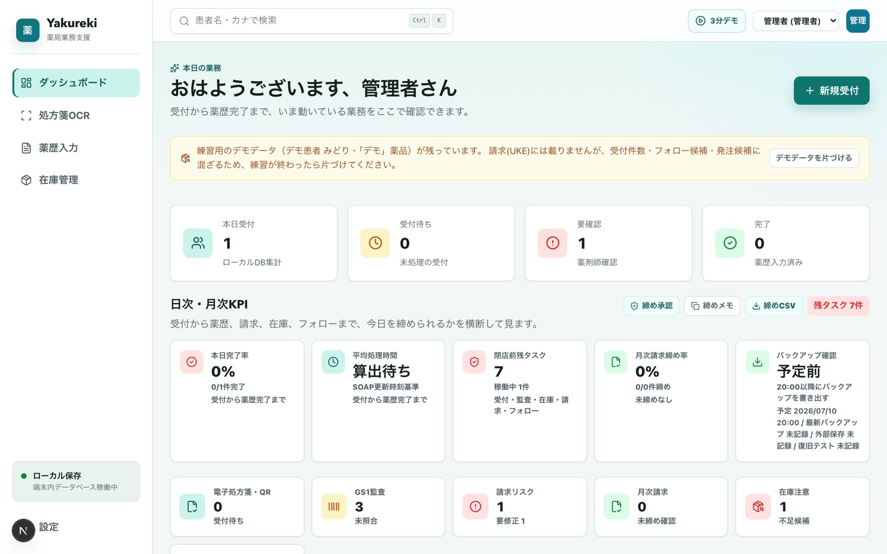
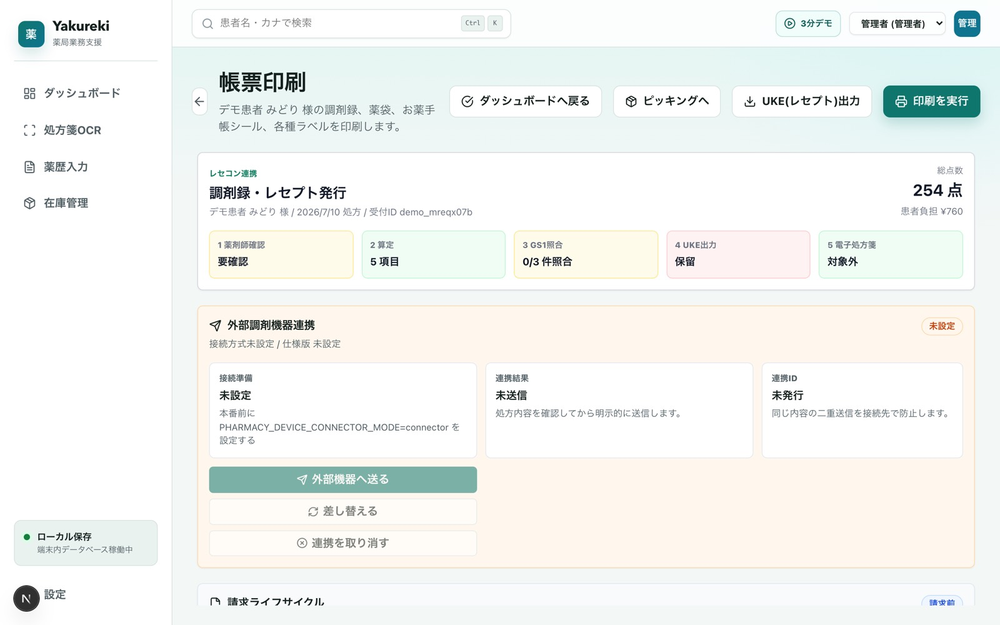
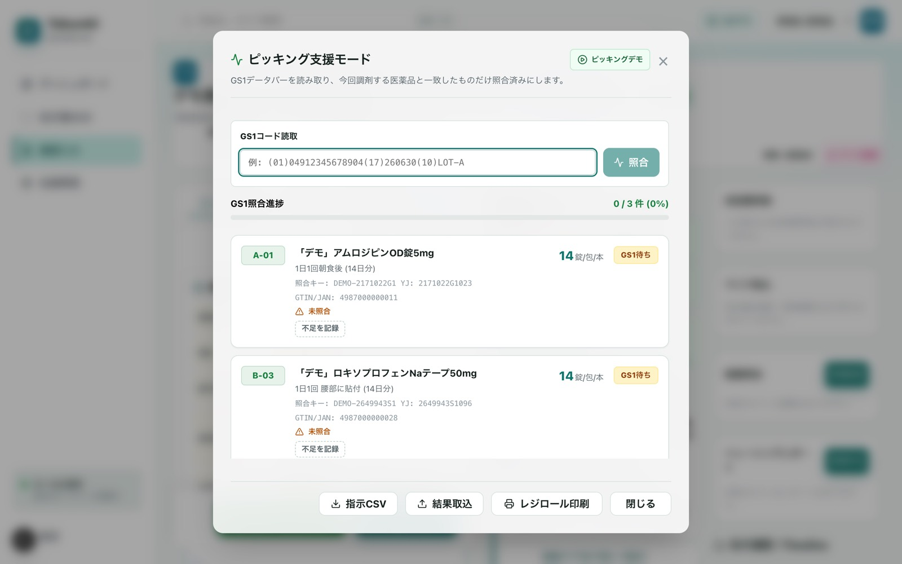
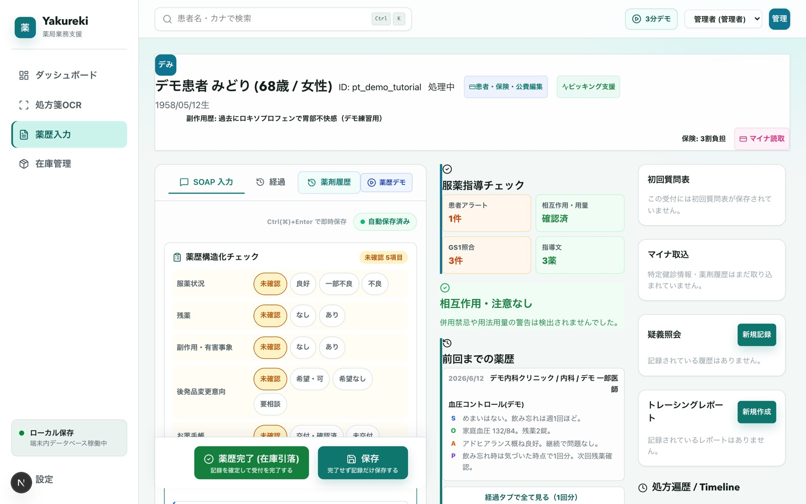

監査ログ
主要操作をハッシュチェーン署名付きで記録。整合性検証とS3 Object Lock（WORM）保全ジョブ。
Local-first / Apache-2.0 / 令和8年調剤報酬ベース
pharma-ossは、調剤薬局のための電子薬歴・レセプト（UKE）システムです。 処方箋の受付からピッキング、薬歴、帳票印刷、レセプト出力までがひと続き。 患者データは各端末のブラウザ内に暗号化保存され、サーバーも月額課金も要りません。
オープンソース（Apache-2.0）。認証医療機器・レセコンではありません — 免責と検証責任を必ずご確認ください。

患者データはブラウザ内DB（IndexedDB）に暗号化保存。オフラインでも業務は止まらず、PWAとしてインストールできます。
GS1未照合・要修正・請求前チェックの指摘が残ったままでは完了やUKE出力ができない、抜け漏れ防止の設計です。
SOAP下書きやリスク候補は根拠付きで提示。採否は薬剤師が判断し、その記録は監査ログに残ります。標準/制限/停止を店舗で選べます。
Workflow
番号は画面の順番ではなく、薬局の1日の順番です。各工程に安全装置が組み込まれています。
01 — 受付
ブラウザ内OCR・処方箋QR・電子処方箋・手入力の4ルート。読み取り結果は原本と並べて確認し、氏名＋生年月日で既存患者へ自動名寄せします。

02 — 調剤・ピッキング
棚番地順のピッキングリストで集め、GS1データバーで薬品・ロット・使用期限の一致を確認。棚不足はその場で記録し、発注候補へ自動連動します。

03 — 薬歴
4パネルSOAPと構造化チェック、前回Do・処方差分・タイムライン。患者アレルギー/副作用歴との突合、PMDA添付文書由来の相互作用・禁忌警告、同効薬重複の検知つき。

04 — 請求
令和8年調剤報酬ベースの自動算定。廃止薬・レセ電コード欠落・必須レコード・合計点数を請求前チェックで検査し、問題があれば出力を停止して指摘CSVを残します。
Operations
主要操作をハッシュチェーン署名付きで記録。整合性検証とS3 Object Lock（WORM）保全ジョブ。
暗号化JSON書き出し、世代管理、復旧前差分プレビュー、閉店時予定とOSスケジューラ連携。
ロット/期限単位の在庫、発注ワークベンチ、入庫登録、分譲、デッドストック検知。
調剤録・薬袋・薬情（薬剤師承認制テンプレ）・手帳シール・水剤/軟膏ラベル・レジロール。
管理者/薬剤師/事務のロール制御、パスキー、退職・端末移行の復旧手順。
完了率・処理時間・返戻・在庫不足・フォロー候補を横断表示。月次レビューとCSV/BI出力。
支払基金CSV/ZIP取込、差分CSVとロールバックJSONを自動生成。薬品重複の検出と統合。
架空のデモ患者・在庫・前回薬歴で全工程を練習。請求には混入せず、ワンクリックで片付け。
ご利用前に必ず
pharma-ossは認証された医療機器・レセプトコンピュータではなく、無保証のオープンソースソフトウェアです。 実際の患者対応・保険請求に使う場合は、算定ロジック・医薬品マスタ・生成帳票を最新の公式資料 （厚生労働省告示・通知、支払基金仕様）と突合し、利用者自身の責任で検証してください。
Getting started
git clone https://github.com/pharma-oss/pharma-oss.git
cd pharma-oss
npm install
npm run dev
# → http://localhost:3000コードも、課題リストも、検証手順も、すべて公開しています。 薬剤師の目でのレビュー、現場でのフィードバック、Pull Requestを歓迎します。